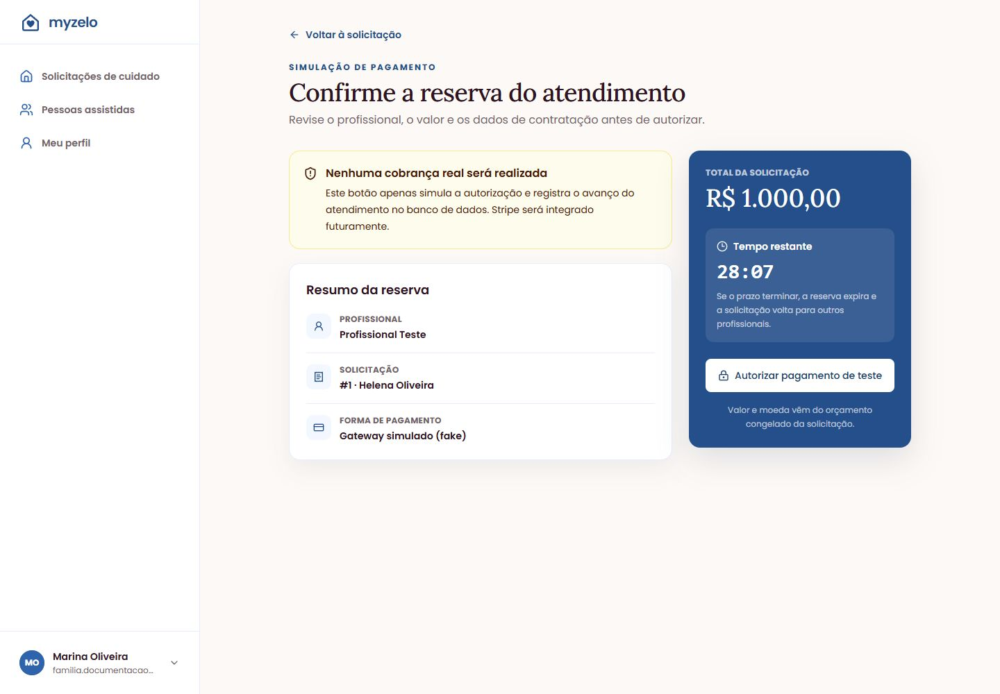

Uma jornada: Marina e Helena
Acompanhe um exemplo fictício desde a criação da conta até o atendimento concluído.
O cenário de treinamento
Marina Oliveira é a responsável pela conta e solicita cuidado para sua mãe, Helena Oliveira. O cuidado ocorre em uma residência fictícia em Campo Grande/MS, às quartas-feiras, por quatro horas, começando às 09:00. A necessidade escolhida é companhia e supervisão, sem procedimento de enfermagem.
1. Preparar a conta e o pedido
- Marina escolhe Sou Familiar, cria sua conta e informa o WhatsApp no primeiro acesso.
- Ela cadastra Helena em Pessoa assistida e salva o endereço da residência.
- Marca Quarta, 4 horas, Data de início e Horário.
- Escolhe Independente, Sem auxílio, Companhia e supervisão e Nenhum procedimento.
- Retorna à lista, encontra o Rascunho e usa Continuar para conferir a revisão.
- Confirma o e-mail recebido e envia a solicitação.

2. Confirmar a reserva
- O pedido aparece como Buscando profissional. O Profissional Teste recebe a oportunidade e aceita.
- Marina vê Aguardando pagamento e o prazo da reserva.
- Ao abrir Simular pagamento, encontra uma pendência fiscal. Preenche os dados, salva e volta.
- Confere o aviso de que não há cobrança real e usa Autorizar pagamento de teste.
- O pedido passa para Atendimento autorizado.


3. Acompanhar e concluir
- Na data combinada, o profissional informa o início. Marina vê Em atendimento.
- O profissional informa a conclusão; o pedido passa para Aguardando confirmação.
- Marina confere o serviço e clica em Confirmar conclusão.
- Na lista, o cartão aparece como Concluído. Ela usa Visualizar para consultar os detalhes quando precisar.

Exercício para treinamento
Peça à pessoa em treinamento para localizar a pessoa assistida, o endereço, a agenda e o valor nos detalhes. Depois, pergunte em que momento o e-mail é exigido, onde preencher dados fiscais e qual a diferença entre autorizar o pagamento de teste e confirmar a conclusão.
Respostas esperadas: e-mail no envio; dados fiscais em Meu perfil; pagamento autoriza o atendimento, enquanto confirmação registra o encerramento pela família.
Resultado esperado
A jornada fica registrada como Concluído e pode ser revisitada pelo histórico.
Regras que você precisa conhecer
- A família não executa os botões do profissional. Os avanços dependem do aceite, início e término registrados por ele.
- Neste exercício não houve atendimento real nem cobrança real.
- Cada etapa do exemplo corresponde a uma tela real capturada no ambiente local.